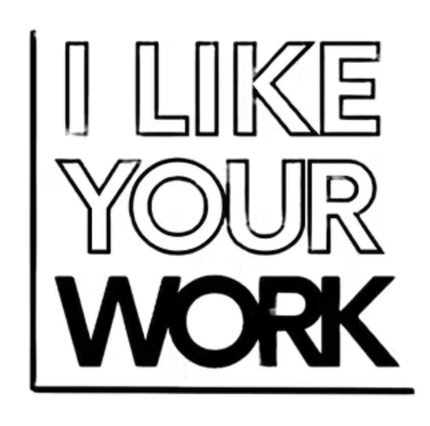

Tess Bilhartz: Follow Me Down, by Clare Gemima
Fantasy and Reality: Tess Bilhartz interviewed by Kerri Ammirata
Yale University Radio, interview with Brainard Carey
Portland Monthly, "Painting with Bob Dylan and Your Best Friend," Matthew Trueherz
Cliff Notes: Tess Bilhartz and Margaux Ogden: Blonde on Blonde, Jaydra Johnson
Mini Interview: Margaux Ogden and Tess Bilhartz. by Ashley Gifford

Artist Tess Bilhartz: Collaboration, Film and Bob Dylan